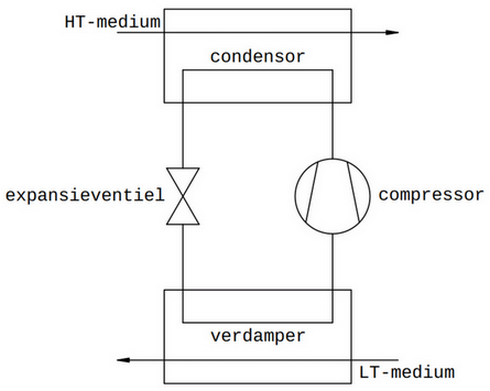
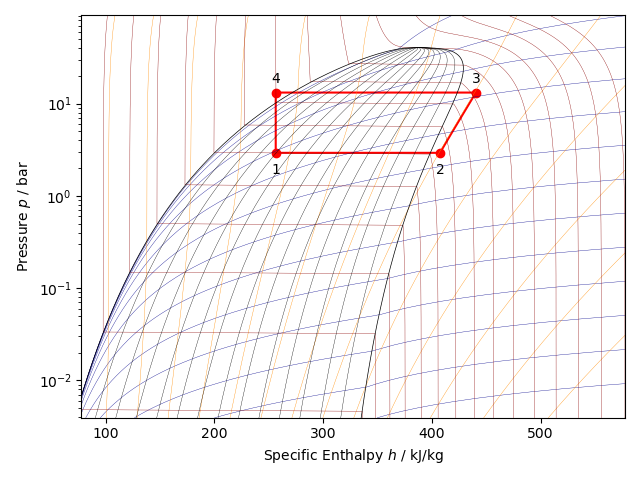

Basic Principles of Vapor Compression Refrigeration
Contents
Basic Principles of Vapor Compression Refrigeration#
A vapor compression machine serves to extract heat from a “low temperature medium” (LT medium), to transport and then to release this heat into a “high temperature medium” (HT medium). Hence, when its purpose is to release heat to a HT medium, the vapor compression machine is also called a “heat pump”, as heat is pumped, against its natural tendency, from a low to a high temperature zone.
Fundamental Parts#
The vapor compression machine has 4 essential components:
the evaporator, i.e. the heat exchanger where heat is extracted from the LT medium.
the condenser, i.e. the heat exchanger where heat is released to the HT medium.
the compressor, which transfers heat from the evaporator to the condenser.
the expansion valve, which creates and separates the high- and low-pressure zone inside the vapor compression machine, and also regulates the mass flow rate of refrigerant depending on the heat load at the evaporator.

These four fundamental components are interconnected in a loop. For the transport of heat, a fluid is needed to carry the heat. This fluid is called the refrigerant. At the entrance of the evaporator, the refrigerant must be brought into a state that allows it to absorb heat from the LT medium. The expansion valve between the condenser and the evaporator is responsible for this. At the entrance of the condenser, the fluid must then be brought back into a state that allows it to release heat to the HT medium. The compressor between the evaporator and the condenser takes care of this.
Description of the Standard Vapor Compression Cycle#
The fundamental working principle of the vapor compression machine is based on changing the pressure of the refrigerant. By lowering the pressure, the temperature of the refrigerant will also be lowered at the same time. If the temperature of the refrigerant is made lower than the temperature of the LT medium, heat will flow from the LT medium to the refrigerant inside the evaporator. Conversely, by increasing the pressure, the temperature of the refrigerant can be made higher again. If the temperature of the refrigerant is made higher than the temperature of the HT medium, heat will flow from the refrigerant to the HT medium inside the condenser.
The “standard vapor compression cycle” is an idealized vapor compression cycle in which no pressure losses occur in the evaporator, in the condenser, and in the connection lines between the four fundamental components (called the liquid line, the suction line and the discharge line).
Expansion#
Let us consider the refrigerant at a given temperature \(T\) and pressure \(P\), where it exists as a subcooled liquid. This is the situation at the condenser exit. The given temperature \(T\) corresponds to a well-defined pressure \(P_{sat}\) of the liquid at which the liquid would be saturated. If the pressure \(P\) is suddenly reduced to a value \(P'\) that is smaller than \(P_{sat}\), the refrigerant can no longer exist as only liquid. Due to the pressure reduction below \(P_{sat}\), it will transform into a phase mixture of saturated liquid and saturated vapor, the temperature of which is now equal to the saturation temperature \(T_{sat}\) associated with the reduced pressure \(P'\). This phenomenon is called flashing, and it occurs in the expansion valve between the condenser and the evaporator. Essentially, the expansion valve is a constriction through which the refrigerant is pushed by the condenser pressure. The expansion valve thus makes it possible to build up pressure inside the condenser and at the same time ensures the necessary pressure reduction of the refrigerant in order to lower its temperature.
Evaporation#
Past the expansion valve, the phase mixture flows through the evaporator. If the temperature \(T_{sat}\) after the expansion valve is less than the temperature of the LT medium, the phase mixture absorbs heat in the evaporator while remaining at a constant temperature \(T_{sat}\) and constant pressure \(P'\) until the phase change to saturated vapor is complete. From then on, further heat absorption will raise the temperature of the vapor becomes a superheated vapor. This is the state of the refrigerant at the exit of the evaporator.
Compression#
The compressor is primarily responsible for transporting the refrigerant from the evaporator to the condenser and as such for circulating the refrigerant inside the loop. This transport is counteracted by the pressure difference between evaporator (low pressure) and condenser (high pressure), which is caused by the expansion valve. In order to move the refrigerant from the low to the high pressure zone, the compressor has to do work. The energy required for doing this work, is supplied by an electric motor. In the compressor the pressure of the refrigerant is increased to the pressure prevailing in the condenser. This pressure increase is accompanied by a reduction in specific volume (i.e. the refrigerant gets compressed) and also by an increase in temperature of the refrigerant.
Condensation#
At the entrance of the condenser, compressed and superheated vapor flows into the condenser. If the temperature of the superheated refrigerant vapor exceeds the temperature of the HT medium flowing on the other side of the condenser, the refrigerant will release heat to the HT medium. The superheated vapor will now cool off until it becomes a saturated vapor (a process called desuperheating). The temperature at which the refrigerant becomes saturated vapor will depend on the condenser pressure. Once saturation temperature is reached, the refrigerant will begin to condense and transform from vapor into liquid. During the condensation process, the refrigerant releases heat to the HT medium without any change in temperature (the heat released is called latent heat). As soon as the vapor fraction is completely transformed into saturated liquid, the temperature will start to drop further as long as heat can still be released to the HT medium in the condenser. The refrigerant will then become a subcooled liquid again, and the vapor compression cycle is ready to be repeated.
Steady-state Equations of the Standard Vapor Compression Cycle#
Evaporator#
The refrigerant enters the evaporator as a phase mixture of saturated liquid and vapor. The vapor content (or quality) \(x\) is characteristic for the state of the phase mixture. The refrigerant absorbs heat in the evaporator. While the refrigerant is flowing through the evaporator, this leads to a progressive conversion of saturated liquid into saturated vapor, and as such to an increase in the vapor content \(x\). The evaporation process happens at constant temperature and constant pressure (ignoring any pressure drop in the evaporator). The evaporation process can therefore be represented as an isobaric process. The evaporator temperature is determined by the prevailing evaporator pressure. It is the saturation temperature of the refrigerant that corresponds with this pressure. The absorption of heat leads to an increase of the refrigerant’s energy content (enthalpy). Once the liquid fraction has been completely converted into saturated vapour, any further heat absorption will make the temperature of the refrigerant to rise. At this stage the refrigerant has turned into a superheated vapor (the temperature of the vapor is higher than the saturation temperature associated with the evaporator pressure). The relationship between the amount of heat that is absorbed per unit of time by the refrigerant inside the evaporator and its enthalpy increase is given by:
\({\dot Q_e}\) = thermal power absorbed by the refrigerant - W
\({\dot m_c}\) = mass flow rate of refrigerant - kg/s
\(h_{c,2}\) = enthalpy of the refrigerant at the evaporator exit - J/kg
\(h_{c,1}\) = enthalpy of the refrigerant at the evaporator entrance - J/kg
The enthalpy increase per unit mass of refrigerant between the in- and outlet of the evaporator is called the refrigeration effect.
Under steady-state conditions, the heat flow absorbed by the refrigerant in the evaporator is equal to the heat flow transferred from the LT medium to the refrigerant. This heat transfer is partly determined by the conditions on the LT medium’s side and by the construction and geometry of the evaporator. The heat transfer between the LT medium and the refrigerant in the evaporator can be described by the equation:
\(ε_e\) = heat exchanger effectiveness of the evaporator
\(\dot {m_{lt}}\) = mass flow rate of LT-medium through the evaporator - kg/s
\(h_{lt,i}\) = enthalpy of LT-medium at the evaporator inlet - J/kg
\(h_{c,1}\) = enthalpy of refrigerant at the evaporator inlet - J/kg
Determining the effectiveness of the evaporator is a separate story, which will not be discussed any further in this chapter, but will receive more attention in a subsequent chapter. The product of mass flow rate \(\dot {m_{lt}}\) and enthalpy difference \((h_{lt,i} – h_{c,1})\) constitutes the maximum heat power that could theoretically be transferred from the LT- medium to the refrigerant in the evaporator.
Compressor#
The compressor moves a fixed volume per unit of time, which depends on the speed the compressor is driven with. The mass of refrigerant vapor contained in that volume, and therefore the mass flow rate of circulating refrigerant, depends on the specific volume of the refrigerant vapor, which in turn is a function of the evaporator pressure. The refrigerant’s mass flow rate is also controlled by the expansion valve. In the case of a thermostatic expansion valve (TXV), the degree of superheat of the refrigerant vapor is measured at the outlet of the evaporator. Some overheating of the vapor leaving the evaporator is necessary to ensure that no liquid droplets, which are incompressible, can enter the compressor and cause damage to it. When the measured degree of superheat is greater than the set point value, the TXV will close more, and when smaller, it will open more. Under steady-state however, the degree of superheat remains constant and is equal to the set point value set at the expansion valve. In the compressor the refrigerant vapor is compressed from the evaporator to the condenser pressure. This requires power to be supplied to the compressor. In an idealized representation the compression process runs isentropic (i.e. with constant entropy of the refrigerant).
\(\dot {W_c}^*\) = power requirement should compression be isentropic - W
\(\dot {m_c}\) = mass flow rate of refrigerant - kg/s
\({h_{c,3}}^*\) = enthalpy of refrigerant at the compressor exit under the assumption of isentropic compression (\({s_{c,3}}^*\) = \(s_{c,2}\)) - J/kg
\(h_{c,2}\) = enthalpy of refrigerant at compressor entrance (= evaporator exit) - J/kg
The enthalpy increase \(({h_{c,3}}^* – h_{c,2})\) of the refrigerant in the compressor corresponds to the work per unit mass of refrigerant that the compressor adds to the refrigerant. However, in reality the compression work will be greater than isentropic compression work, and also the refrigerant’s entropy will have been increased after compression (\(s_{c,3} > s_{c,2}\)). The ratio of isentropic to actual compression work is called the isentropic efficiency of the compressor.
The really absorbed compressor power can then be expressed as:
Manufacturers of refrigeration compressors publish tables or curves for each compressor model that show, among other things, the real compressor power absorbed by the refrigerant depending on the evaporating temperature and condensing temperature. These curves can be mathematically approximated by a polynomial of which the coefficients can also be provided by compressor manufacturers (e.g. the selection software SELECT 8 from COPELAND or COOLSELECTOR2 software from DANFOSS). With these polynomials and coefficients, one can make computer simulations of a vapor compression machine under different operating conditions. Besides compressor power, polynomial coefficients are also available for cooling capacity, mass flow rate of refrigerant, electrical current drawn by the compressor’s electric drive, and discharge temperature of the refrigerant at the compressor exit. (Note: with cooling capacity the product is meant of the mass flow rate created by the compressor and the refrigeration effect of the refrigerant.)
Condenser#
At the entrance of the condenser, the refrigerant has been pressurized to condenser pressure and has been superheated. Inside the condenser the refrigerant transfers heat to the HT medium. First it cools in temperature until it has reached the saturation temperature that corresponds to the prevailing condenser pressure. From that point onward, progressive condensation of the refrigerant occurs in the condenser. During condensation the temperature of the refrigerant does not change, but heat is released while saturated vapor is converted to saturated liquid, which is then transferred to the HT medium being at a lower temperature than the refrigerant. Once the vapor fraction has been completely converted to liquid, the temperature of the liquid refrigerant will start to fall again and the liquid will become subcooled. The process inside the condenser, like in the case of the evaporator, is represented by an isobaric process.
The amount of heat released by the refrigerant in the condenser per unit time is related to the energy change of the refrigerant by:
\(\dot {Q_c}\) = heat rejection rate inside the condensor - W
\(\dot {m_c}\) = mass flow rate of refrigerant - kg/s
\(h_{c,3}\) = enthalpy of refrigerant at the condensor inlet - J/kg
\(h_{c,4}\) = enthalpy of refrigerant at the condensor outlet - J/kg
Heat transfer in the condenser is determined by the conditions on the side of the HT medium and by the construction or geometry of the condenser.
\(ε_c\) = heat exchanger effectiveness of condenser
\(\dot {m_{ht}}\) = mass flow rate of HT medium - kg/s
\(c_{pa}\) = specific heat of humid air (1.020 J/(kg.K))
\(T_c\) = condensation temperature - °C
\(T_{ht,i}\) = temperature of HT medium at condenser inlet - °C
Expansion Valve#
The expansion valve between the condenser outlet and the evaporator inlet is essentially a constriction that causes a rapid drop in pressure of the refrigerant being pushed through it. Neither work, nor significant heat is exchanged in the expansion process, and as such it can be represented as an isenthalpic process (a process in which the enthalpy remains constant).
\(h_{c,1}\) = enthalpy of refrigerant at the evaporator inlet - J/kg
\(h_{c,4}\) = enthalpy of refrigerant at the condenser outlet - J/kg
EER and COP#
The purpose of the vapor compression machine can be twofold: either it is used for cooling, otherwise for heating. Heat is extracted from the LT medium in the evaporator and heat is given off to the HT medium in the condenser. When the vapor compression machine is used to heat, it is common to call it a heat pump. To realize either cooling or heating, power must be supplied to the compressor. The less power is required to generate a given cooling or heating capacity, the more energy efficient or, in other words, the better the performance of the vapor compression machine. The index by which the performance of a vapor compression machine is expressed is called the EER (Energy Efficiency Ratio) or COP (Coefficient Of Performance). EER is commonly related to cooling, while COP refers to heating. Thus, EER is defined as:
and COP as:
from which it follows that under the same operating conditions of the vapor compression machine, the EER and COP are related to each other by:
Thus, the COP of a vapor compression machine is always greater than the EER, when being considered under the exact same operating conditions.
The Vapor Compression Cycle in the log(P)-h Diagram#
The log(P)-h diagram is a common refrigerant state diagram. Along the horizontal axis we have the specific enthalpy (i.e. per unit mass) of the refrigerant and along the vertical axis the logarithm (with base 10) of the pressure of the refrigerant.
The values of two state variables, in this case enthalpy and pressure, unambiguously capture the full thermodynamic state of the refrigerant. This means that when the values of two state variables are known, the values of all other state variables are also fixed. Isolines of other state variables are drawn on the log(P)-h diagram. The principal isolines on the log(P)-h diagram are isotherms (lines that connect points on the log(P)-h diagram having the same temperature) and isentropes (lines connecting points on the log(P)-h diagram that possess the same entropy).
With Python and the third-party package CoolProp it is possible to draw the log(P)-h diagram of a wide range of refrigerants and draw a vapor compression cycle on it. The figure below shows the log(P)-h diagram of the refrigerant R134A. It shows a standard vapor compression cycle between an evaporation temperature of 0 °C and a condensation temperature of 50 °C.

Point 1 indicates the condition of the refrigerant at the inlet of the evaporator. Point 1 lies in the liquid-vapor region of the refrigerant. The refrigerant there is a phase mixture of saturated liquid and saturated vapor.
Point 2 indicates the reached state of the refrigerant at the evaporator outlet. Point 2 is to the right of the vapor line, in the superheated region. At the evaporator outlet, the refrigerant is a superheated vapor at the given evaporator pressure that is 10 K superheated.
Point 3 indicates the condition of the refrigerant at the inlet of the condenser. The refrigerant after compression has become a superheated vapor at high pressure (condenser pressure). In the condenser, the refrigerant first cools until it has become a saturated vapor. In the liquid-vapor region, between the vapor and liquid line, the condensation process occurs, where the refrigerant changes from saturated vapor to saturated liquid.
Point 4 indicates the condition of the refrigerant at the outlet of the condenser. Point 4 is to the left of the liquid line, in the liquid region. This indicates that the refrigerant at the exit of the condenser has become a subcooled liquid. The degree of subcooling is 10 K. Between point 4 and point 1, the expansion process occurs in the expansion valve, which is being considered as an isenthalpic process (the refrigerant exchanges in the expansion valve, neither heat nor work with the environment, so the enthalpy of the refrigerant remains constant during the expansion process).
Following chapters will now demonstrate use cases of the package hvac in vapor compression refrigeration applications.